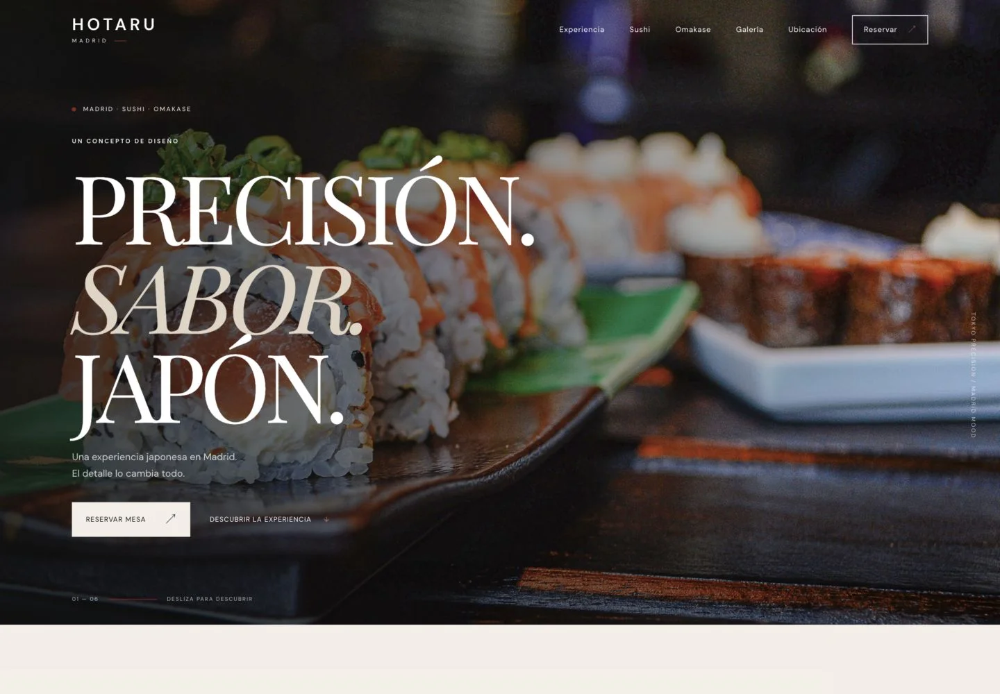
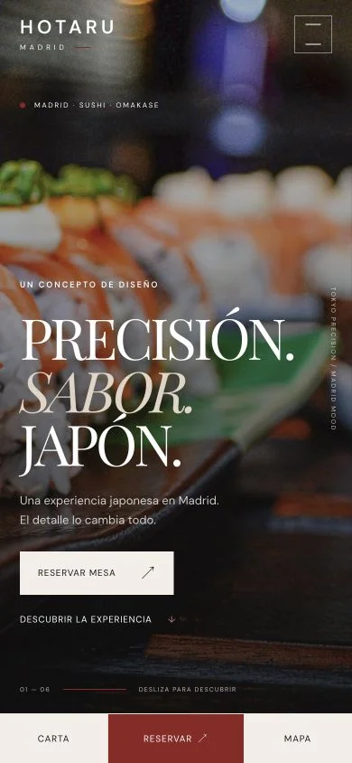
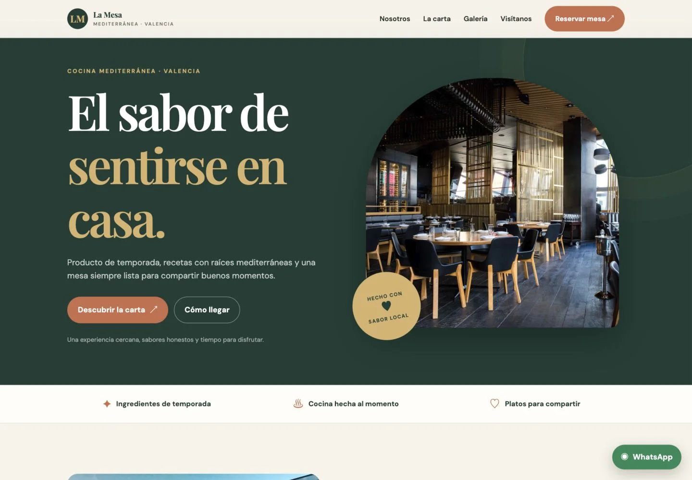

Web para restaurantes
Diseño y desarrollo de una web única, rápida y adaptada a la identidad de tu restaurante.
- Diseño personalizado
- Optimización móvil
- SEO básico
- Google Maps y contacto directo
DISEÑO WEB PARA RESTAURANTES · ESPAÑA
Diseñamos páginas web para restaurantes que quieren destacar, transmitir su esencia y convertir visitas en reservas, pedidos y nuevos clientes.
Diseño · Desarrollo · Adaptación móvil · Carta digital


RESTAURANTES ✳ CAFÉS ✳ PIZZERÍAS ✳ SUSHI ✳ BARES ✳ PARA LLEVAR ✳ A DOMICILIO
01 — PROYECTOS SELECCIONADOS
No trabajamos con una plantilla para todos. Creamos experiencias digitales adaptadas al carácter de cada restaurante.
Los proyectos mostrados son conceptos de diseño creados con fines de demostración y no se presentan como trabajos encargados por las marcas mostradas.
02 — SERVICIOS
Una web con una misión clara: hacer que conocerte, elegirte y contactar contigo sea más fácil.
Diseño y desarrollo de una web única, rápida y adaptada a la identidad de tu restaurante.
Una carta clara, atractiva y fácil de consultar desde cualquier móvil.
Ponemos las acciones importantes a un clic.
Si tu restaurante ya tiene web pero se ha quedado atrás, la transformamos en una experiencia moderna.
Las conexiones se configuran según las herramientas de tu restaurante. Los servicios externos pueden tener sus propias tarifas.
03 — ¿POR QUÉ STUDIO WEB?
Entendemos lo que busca quien tiene hambre.
Y lo que necesita quien está detrás del restaurante.
Tu restaurante no se parece a los demás. Tu web tampoco debería hacerlo.
Tus clientes buscan dónde comer desde el móvil. Diseñamos primero pensando en ellos.
Reservar, llamar, pedir o llegar al restaurante debe ser fácil.
Sin webs pesadas ni procesos innecesariamente complicados.
TU RESTAURANTE, A UN CLIC

04 — CÓMO TRABAJAMOS
Nos cuentas tu concepto, estilo, carta y objetivos.
Definimos la estructura, identidad visual y experiencia.
Construimos una web rápida, adaptada al móvil y pensada para convertir.
Revisamos todo y dejamos tu nueva web lista para recibir clientes.
La diferencia se ve.
Y se nota al navegar.
ANTES
Comida casera. Para más información consulte nuestros horarios.
Información dispersa · Carta difícil de encontrar · Sin una acción clara
DESPUÉS
RESTAURANTE DE EJEMPLO
Identidad propia · Carta visible · Reservas a un clic
Comparación ilustrativa de un restaurante ficticio. No representa el antes y el después de un negocio real.
05 — UNA INVERSIÓN CON SENTIDO
WEB ESENCIAL
Desde 249€
Para pequeños restaurantes, cafés y negocios de comida para llevar.
WEB PRO
Desde 449€
Para restaurantes que quieren una experiencia digital más completa.
Cada restaurante es diferente. El precio final depende del proyecto y las funcionalidades necesarias. El presupuesto detallará impuestos, dominio, alojamiento y posibles servicios externos.
Cambios de carta, precios, textos, imágenes y pequeños ajustes. Alcance acordado contigo.
Desde 19 €/mesDepende del alcance, los contenidos disponibles y las revisiones. Acordamos un calendario realista antes de empezar y te informamos de cada etapa.
No hace falta que lo tengas para empezar. Si ya tienes uno, podemos utilizarlo. Si no, te orientamos para registrarlo a tu nombre. Dominio y alojamiento se concretan en el presupuesto.
Sí. Definimos cómo actualizarla según la solución elegida. Podemos ayudarte con cambios puntuales o con el mantenimiento opcional.
Sí. Diseñamos para pantallas pequeñas y revisamos la navegación, la carta y los botones también en tablet y ordenador.
Sí. Añadimos un acceso directo a tu número con un mensaje inicial para que tus clientes puedan escribirte fácilmente.
Sí. Podemos enlazar tu plataforma de reservas o configurar una opción compatible con tu negocio. Las funciones y los posibles costes del proveedor se acuerdan antes.
Sí. Trabajamos a distancia con restaurantes, cafeterías, pizzerías y otros negocios de hostelería de toda España.
El mantenimiento es opcional. El dominio, el alojamiento o las herramientas de terceros pueden tener costes recurrentes, que se detallan antes de contratar.
TU RESTAURANTE MERECE ALGO MEJOR.
Haz que la primera impresión empiece antes de que el cliente llegue a la mesa.
Cuéntanos tu idea. Sin compromiso.07 — HABLEMOS
Cuéntanos qué hace especial a tu restaurante y qué te gustaría mejorar.
Hablemos por WhatsApp ↗